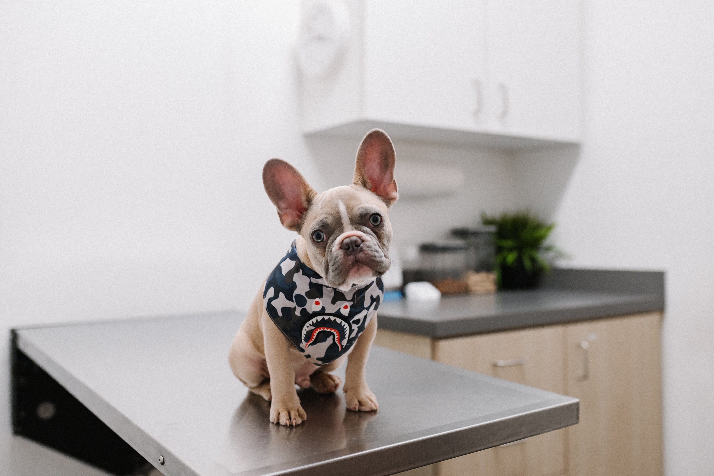
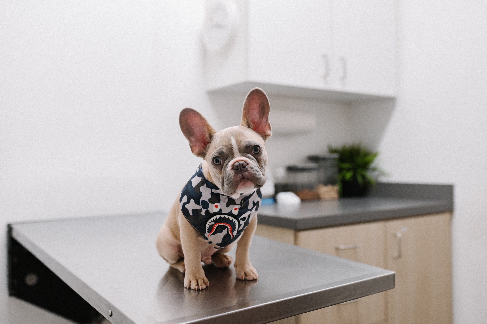

Bem-vindo à PetCare!
Nossa Missão 🐶💙
No PetCare, acreditamos que cada animalzinho é parte da nossa famÃlia e merece ser tratado com todo o carinho e cuidado. Nossa iniciativa nasceu da vontade de proporcionar aos nossos clientes uma experiência diferenciada, longe do tratamento impessoal de um cliente ou mercadoria. Aqui, o seu pet é tratado como se estivesse na nossa própria casa.
Nossa equipe é composta por amantes de animais, experientes e altamente capacitados para oferecer o melhor atendimento e cuidado aos nossos peludos. Sabemos que cada pet é único, e por isso personalizamos nossos serviços de acordo com as necessidades individuais de cada um.
No PetCare, você encontrará uma ampla gama de serviços, desde banho e tosa até consultas veterinárias, além de produtos de qualidade para garantir o bem-estar do seu amiguinho. Nosso objetivo é proporcionar uma experiência positiva e agradável tanto para você quanto para o seu pet.
Portanto, se você busca um lugar onde o seu pet será tratado com todo o amor, cuidado e respeito que ele merece, o PetCare é o local ideal para você. Venha nos visitar e faça parte da nossa famÃlia!
Nós nos orgulhamos em oferecer o melhor para o seu amiguinho de quatro patas. Conte conosco no cuidado e bem-estar do seu pet.
 
